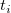
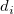
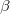
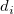
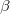

/math-7fd25fca62158bf07a508af6b3048824.png "\lambda (z,t)=\lambda _0(t)\exp (z^{T}\beta +\omega )\,\!")
i = 1, 2, ..., nで、をi番目の観測値は、p 共変量 のベクターデータを持ち、これに対する故障時間または打ち切り時間にします。故障と打ち切りの過程は独立しているものとします。ハザード関数は、共変量 z を持つ個々のデータが時間tで故障する確率で、時間tは、個々が生存する時間として与えられます。Con比例ハザードモデルは、次のような形式になっています。
ここでは、ハザード関数のベースラインで時間関数ではなく、 /math-5b320b6d3d3254d936c752ae308dbfd8.png "\beta \,\!") は、不明なパラメータのベクターデータで、は分かっているオフセット値です。
は、不明なパラメータのベクターデータで、は分かっているオフセット値です。
時間/math-659eb06b406d2e114b139d0dd37ba959.png "t_{(i)}\,\!") における個別の故障のように、で与えられる故障時間は、 明確な故障時間 と結びついており、 に対する周辺尤度は、次式で近似されます。
における個別の故障のように、で与えられる故障時間は、 明確な故障時間 と結びついており、 に対する周辺尤度は、次式で近似されます。
|
|
(1) |
ここで、は、時間 における観測した個々の故障の共変量の合計であり、 は、 より前のリスクにおける個々の故障です。これは、時間以上に生存した個々のデータに加えて、時間 での故障または打ち切りのデータすべてとなります。 /math-8d2bf18dffee8005942fdde98a69f3a1.png "\beta\,\!") のMLE(最大尤度見積り)は、で与えられ、Newton-Raphson反復法を使って(1)を最大化することで取得されます。この反復法は、段階的に行われ、下記の(2)と(3)で与えられる(1)の一階および二階微分を利用します。
のMLE(最大尤度見積り)は、で与えられ、Newton-Raphson反復法を使って(1)を最大化することで取得されます。この反復法は、段階的に行われ、下記の(2)と(3)で与えられる(1)の一階および二階微分を利用します。
|
(2) |
j = 1, 2,..., p, ここでは、ベクターデータの j番目の要素です。
同様に、
|
(3) |
ここで /math-b9afb94ffa7c4b399e7da601d15f214c.png "\gamma _{hji}=\frac{\sum_{l\in R(t_{(1)})}z_{hl}z_{jl}\exp (z_l^{T}\beta +\omega _l)}{\sum_{l\in R(t_{(1)})}\exp (z_l^{T}\beta +\omega _l)}-\alpha _{hi}(\beta )\alpha _{ji}(\beta )") h, j = 1, ..., p.p.
h, j = 1, ..., p.p.
は、スコアベクターの j 番目の成分で、 は、観測情報行列 の(h, j)要素です。この行列の逆行列は、 の分散－共分散行列を与えます。
共変量または共変量の線形の組合せは、時間と共に単調に増加または減少しており、1つ以上のは無限大となります。
もし は/math-3b0619e986d2ebf9acd80c494cb421a4.png "\nu\,\!") の層でさまざまに変化すると、k番目の層にあるデータの数は
の層でさまざまに変化すると、k番目の層にあるデータの数は/math-3da18b12eaeaccf089fe39883448b765.png "n_k\,\!") 、 k = 1, ... , )で、を持ち、を取得するために(1)を最大化するのではなく、次の周辺尤度を最大化します。
、 k = 1, ... , )で、を持ち、を取得するために(1)を最大化するのではなく、次の周辺尤度を最大化します。
|
(4) |
ここでは、(1)で簡単なサンプルとして扱われるk番目の層にある観測値に対する尤度への寄与となります。 共変量係数が層にまたがって一定であると結論付けするとき、異なるベースラインハザード関数があります。
故障時間と関連しているベースライン生存関数は次のように見積もられます。
,
ここで
そして、 は、時間における故障の数です。 I番目の観測値の残差は次式で計算されます。
ここで
逸脱は、(logarithm of marginal likelihood)と定義されます。個々の共変量が十分であるかをテストする2つの方法があります。: ネストしたモデルの共変量間の差は、適切な/math-c15009ca5cbb034d023f145a4ed23b8d.png "\chi ^2\,\!") の分布で比較されます。または、パラメータ推定の正規性がz検定を形作るために使われます。推定値を標準誤差で除算するか、帰無仮説下のモデルに対するスコア関数がz検定を形作るために使われます。
の分布で比較されます。または、パラメータ推定の正規性がz検定を形作るために使われます。推定値を標準誤差で除算するか、帰無仮説下のモデルに対するスコア関数がz検定を形作るために使われます。